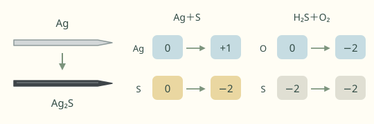

分享原卷｜第 2 題
完整原題
先想一想，再查看答案、解說與原圖
逐項解析
| 選項與原句 | 判讀 | 句意與判斷理由 |
|---|---|---|
| (A) 硫化物發生還原反應而使銀針變黑 | 應選 | 教材以銀被氧化、氧化還原相伴為意圖選A；但未指明含硫物種及其他參與物，不能一概斷言硫化物必被還原。 |
| (B) 銀針變黑，是因為三氧化二砷被還原的結果 | 不選 | 題幹將變黑原因指向硫或硫化物雜質，沒有說三氧化二砷本身與銀反應。 |
| (C) 砒霜的純度越高，與銀針反應變黑的結果越明顯 | 不選 | 純度越高代表硫或硫化物雜質越少，不支持變黑越明顯。 |
| (D) 將銀針改成活性較小的金屬如黃金，也會反應產生硫化物 | 不選 | 改成更不活潑的金屬，不能保證仍發生同樣的氧化反應。 |
詳細說明與解題步驟
題幹指出黑色物質是硫化銀，來源是硫或硫化物雜質，而不是三氧化二砷本身，所以B不合題意。砒霜越純，雜質通常越少，不支持C；金屬活性不同，也不能保證黃金會同樣反應，D不合理。
教材列A，但「銀被氧化」只能確定反應中必有還原過程，不能直接推出所有情況都是硫化物被還原。若銀與硫單質直接生成硫化銀，可說硫被還原；但硫化氫在有氧條件下使銀變黑時，可用4Ag＋2H₂S＋O₂→2Ag₂S＋2H₂O表示，這個例子被還原的是氧，硫仍維持原來的氧化態。
因此保留原題及教材A，說明這是原選項的概括限制；不再用「反應物整體」迴避具體物種，也不把銀針當成能驗出所有毒物的工具。
下方漫畫僅幫助區分硫類雜質與砒霜主要成分，不能拿來證明A在所有條件下都成立。

① 黑色是硫化銀，不是砒霜本身
題幹說含硫雜質使銀表面形成黑色硫化銀Ag₂S，不是三氧化二砷As₂O₃本身被還原，排除B。銀針變黑也不是能驗出所有毒物的證據。
② 銀與硫單質反應：硫被還原
銀與硫單質直接反應生成硫化銀時，銀被氧化、硫被還原。圖中數字是氧化態：Ag由0到+1，S由0到−2；這個例子不能概括所有硫化物。
③ 有氧硫化氫反應：被還原者不同
若硫化氫在有氧條件下使銀變黑，被還原的是氧；硫的氧化態仍是−2。教材保留A，但不能說每種情況都是硫化物被還原。
④ 教材選A，但被還原的物種要看反應條件
教材答案 A：保留用語的條件限制
- 有氧化就有還原，不保證被還原者一定是硫化物。
- C：砒霜較純，含硫雜質較少，不支持更明顯變黑。
- D：銀會反應，不能推黃金也一定有相同反應。
核對註記：題幹、A～D及印刷答案A均已由教用PDF確認；銀被氧化不能單獨證明所有硫化物必被還原，解說保留此限制。 冊次／章節依原對話教用PDF第四冊單元9核對。 使用者已確認教材答案A與目前解說OK，核對已結案。
原圖（僅本題）